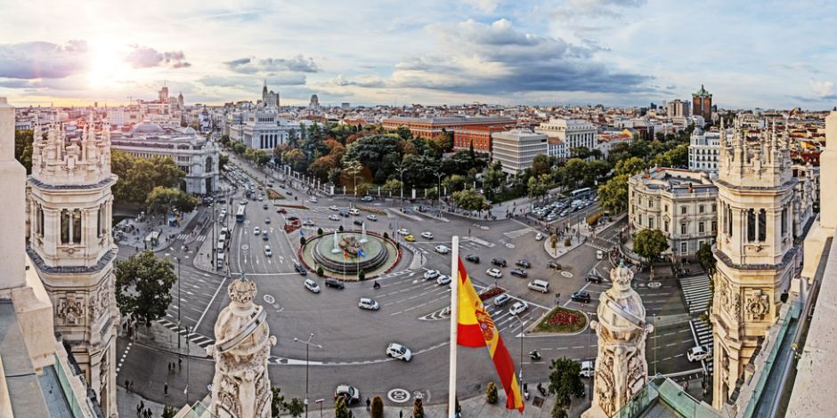

Madrid
Madrid es un municipio y ciudad de España. La localidad, con categoría histórica de villa, es la capital del Estado y de la Comunidad de Madrid. También conocida como la Villa y Corte, es la ciudad más poblada del país, con 3 182 981 habitantes empadronados según datos del INE de 2017 mientras que, con la inclusión de su área metropolitana11 la cifra de población asciende a 6 543 031 habitantes, siendo así la tercera o cuarta área metropolitana de la Unión Europea, según la fuente, por detrás de las de París y Londres, y en algunas fuentes detrás también de la Región del Ruhr, así como la tercera ciudad más poblada de la Unión Europea, por detrás de Berlín y Londres. Madrid ocupa el puesto nº 38 en la lista Economist Intelligence Unit de ciudades con mejor calidad de vida del mundo.
Cultura
Madrid, en la primera mitad de 2014, ha sido la ciudad de España más visitada con 4 069 121 turistas, superando a ciudades como Barcelona, Palma de Mallorca o Sevilla. Es además sede de la Organización Mundial del Turismo y de la Feria Internacional del Turismo (FITUR). Durante 2017 fue el destino más buscado por los turistas de Argentina. En 2012 Madrid recibió 8,8 millones de turistas, de ellos 5,3 millones de turistas correspondían a turismo nacional y 3,5 millones a turismo internacional.
Museos
Madrid cuenta con importantes museos, entre los que destacan las pinacotecas, las cuales constituyen una de las principales atracciones turísticas de la ciudad. El llamado Triángulo del Arte concentra próximos uno de otro, tres centros de referencia: el Museo del Prado, el Thyssen-Bornemisza, y el Museo Reina Sofía:
- El Museo del Prado es uno de los museos más importantes del mundo, dedicado fundamentalmente a la pintura. Se dice que no es la pinacoteca más completa, pero sí la más rica por la acumulación de obras maestras. Su colección se centra en pintura anterior al siglo XX, especialmente española, italiana y flamenca. Algunas de las obras maestras que exhibe son el El caballero de la mano en el pecho del Greco; Las Meninas, La rendición de Breda, Las hilanderas, La fragua de Vulcano y El triunfo de Baco, de Velázquez; La maja desnuda, La maja vestida, La familia de Carlos IV, La carga de los mamelucos, Los fusilamientos en la Moncloa, Pinturas negras de Goya; Las tres Gracias, El juicio de Paris, La adoración de los magos de Rubens; el Autorretrato, los Adán y Eva, de Durero; el Descendimiento de Rogier van der Weyden; El jardín de las delicias, El carro de heno, La mesa de los pecados capitales, Extracción de la piedra de la locura, de El Bosco; Carlos V en Mühlberg, La bacanal de los andrios, Ofrenda a Venus, Danae recibiendo la lluvia de oro, de Tiziano o El Lavatorio de Tintoretto. Además del capítulo pictórico, posee una notable colección de escultura, con obras grecorromanas, renacentistas y de otros periodos, así como colecciones de dibujos, estampas y artes decorativas.
- El Museo Nacional Centro de Arte Reina Sofía es el museo nacional de arte contemporáneo. Sus fondos abarcan el arte de finales del siglo XIX, XX y XXI, con especial acento en los artistas españoles. Así, cuenta con importantes colecciones de Pablo Picasso (con el Guernica, una de sus obras maestras), Salvador Dalí, Juan Gris y Joan Miró. Otros artistas representados son Julio González, Yves Klein, Lucio Fontana, Eduardo Chillida, Pablo Palazuelo, Pablo Serrano, Jean Arp, René Magritte, Antoni Tàpies, Francis Bacon, Pablo Gargallo, Alexander Calder, Mark Rothko o José Gutiérrez Solana, por citar algunos pocos. Alberga además una biblioteca de acceso libre especializada en arte, cuyos fondos ascienden a más de 100 000 libros, 3500 grabaciones sonoras y cerca de 1000 vídeos.
- El Museo Thyssen-Bornemisza representa una de las mayores colecciones privadas de arte del mundo, adquirida en su mayor parte por el Estado español. Sus colecciones muestran una visión panorámica de la historia del arte, ordenada cronológicamente, de forma que se comienza la visita en el Renacimiento y concluye en el siglo XX. En la segunda planta se hace un recorrido por el ciclo del Gótico final y el Renacimiento hasta el Barroco, pasando por el Quattrocento italiano; con autores de la escuela alemana y flamenca, como Jan van Eyck, Alberto Durero y Hans Holbein, y una galería dedicada a Tiziano, Tintoretto, Bassano, El Greco, Bernini y Caravaggio, entre otros. En la primera planta se muestra la colección de pintura holandesa, desde Frans Hals a Max Beckmann; con muestras de Realismo, Rococó, Neoclasicismo, Romanticismo y movimientos impresionistas. La planta baja reúne obras del siglo XX, desde el Cubismo y las primeras vanguardias, hasta el Pop Art. Destacan algunas obras maestras contemporáneas de Picasso, Piet Mondrian, Marc Chagall o Edward Hopper.168 Hay que destacar este museo es el único en España en presentar un panorama coherente de corrientes pictóricas como el Impresionismo, el Expresionismo alemán o la pintura romántica europea, además de exponer obras de autores del todo ausentes en otras colecciones estatales, como Jan van Eyck, Piero della Francesca, Frans Hals, Vincent van Gogh o Friedrich.
Deportes
Entre los deportistas nacidos en Madrid destacan el tenista Manuel Santana, los esquiadores Francisco y Blanca Fernández Ochoa, el piloto de rally Carlos Sainz, los futbolistas Emilio Butragueño, Raúl González e Iker Casillas, los waterpolistas Jesús Rollán y Pedro García Aguado, o la gimnasta Estela Giménez. El deporte más seguido en Madrid es el fútbol, representado en la Primera División de la Liga española de fútbol por:
Real Madrid Club de Fútbol
-Su estadio es el
Santiago Bernabéu
-Ha ganado
-La FIFA le nombró Mejor Club del Siglo XX
Si deseas saber mas sobre este equipo entra
aquí